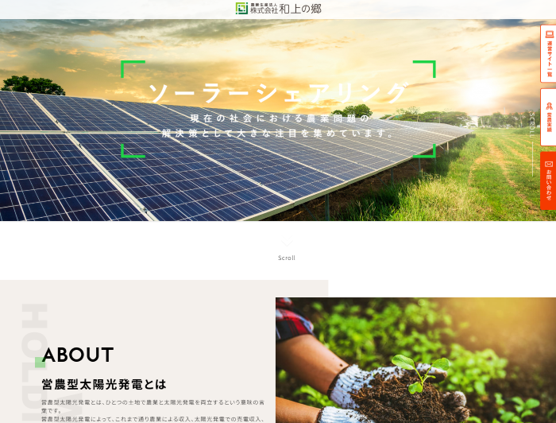

WORK 02 / DESIGN & DEVELOPMENT
Webサイト制作
サイト構成・デザインからコーディングまで、一貫して担当。
PROJECT OVERVIEW
営農型太陽光発電に関する情報を紹介するWebサイト。サイト全体の構成・デザインからHTML・CSS・JavaScriptによる実装まで担当しました。WordPressを使用せず、サーバー上に直接サイトを構築し、レイアウト設計、動的表現、スマートフォン対応まで行っています。
WEB SITE
Webサイト全体
DESIGN & DEVELOPMENT
https://wajo-holdings.jp/agri/ ↗
